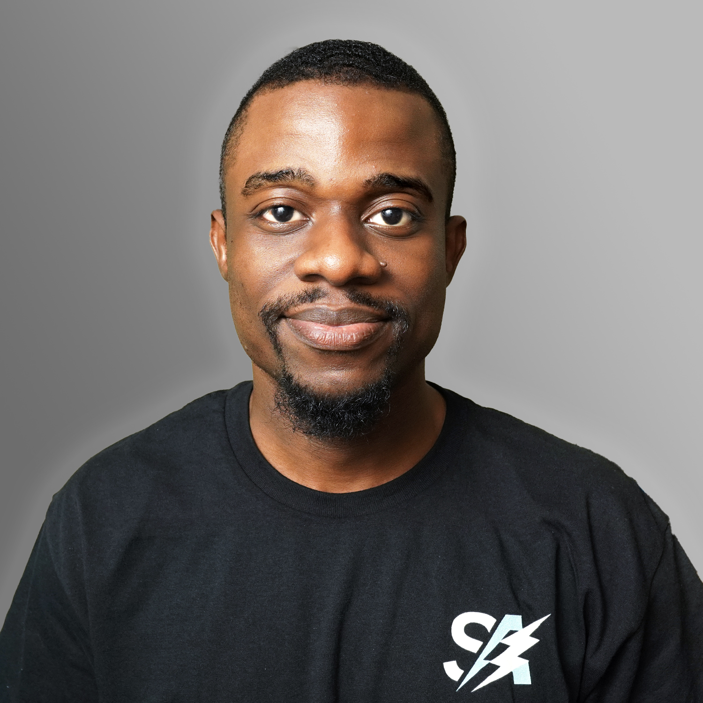
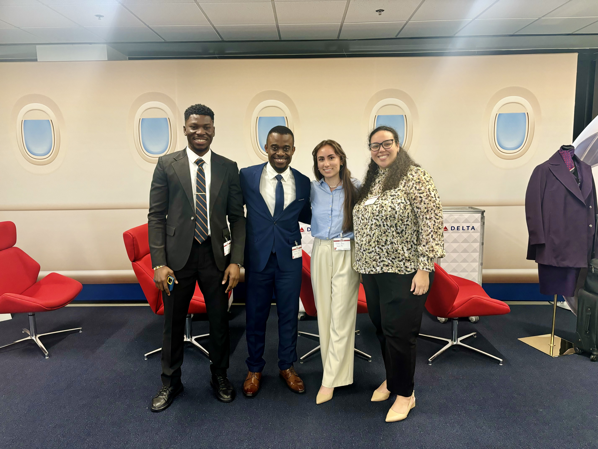
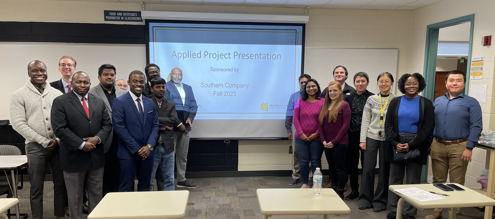
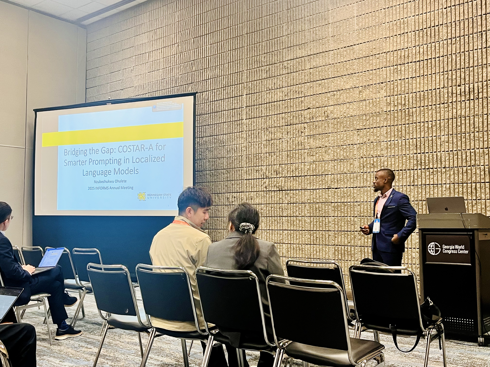
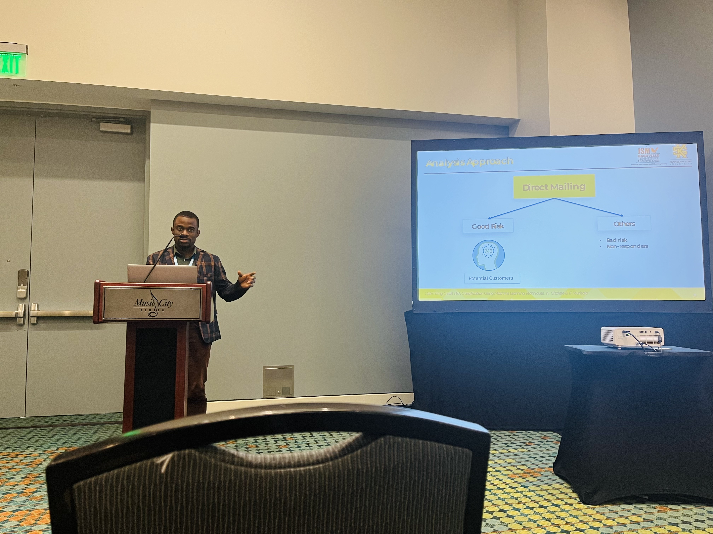
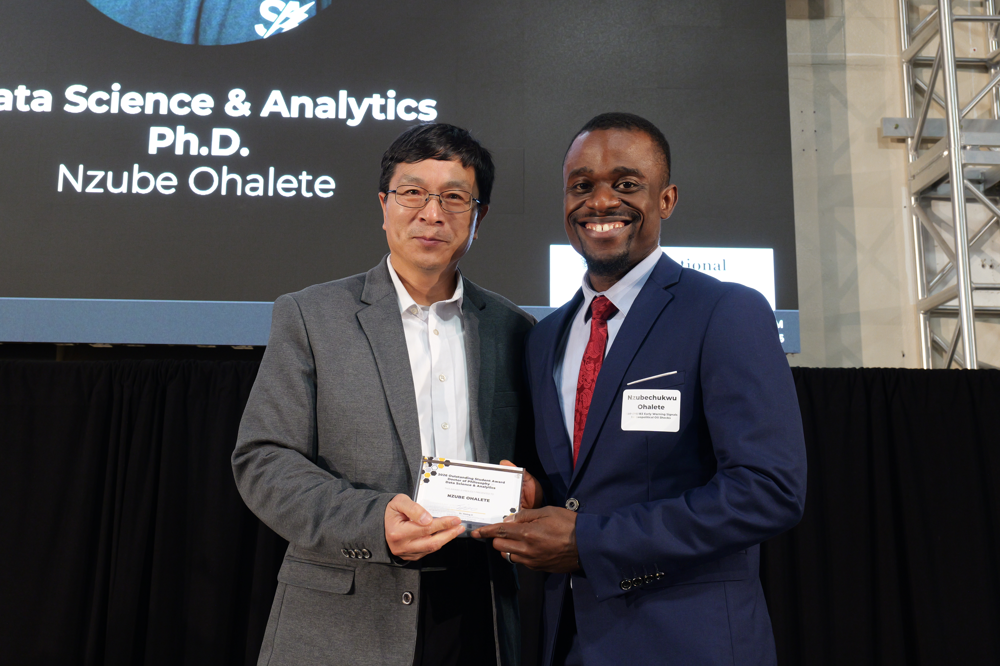

Ph.D.
Kennesaw State University
Data Science & Analytics
Dissertation: Investigating Demographic Bias and Autonomous Survey Completion in Large Language Models.
4.0 / 4.0 · Kennesaw, GA · in progress

addPhD candidate in Data Science & Analytics at Kennesaw State University. I build and evaluate large language model systems for survey research, demographic bias auditing, and trustworthy AI.
As AI systems increasingly stand in for human respondents in research, they raise the hard question of whether we can trust what they produce, and whether they carry hidden biases. My research answers that by building autonomous AI agents that generate synthetic respondents and complete surveys, then rigorously measuring how faithfully they reflect real populations.
Alongside the academic work, I’ve partnered with Delta, Blue Cross Blue Shield of TN, Atlanticus, and Southern Company on applied machine learning, and presented at INFORMS and JSM. I’m a builder at heart, and I love playing with data.

addAnalyzed over 32M calls, 13M messages, and 60M intent records to reduce repeat customer contacts. A CatBoost model reached 77% accuracy and drove a modeled 13% reduction.

addForecast early customer churn across 64 engineered features. A random forest reached 96% accuracy and 96% F1.
1st place · CDSA Industry CompetitionEvaluated continuous glucose monitoring across over 500K member records and claims, with case-control matching on 7,500 pairs. Type I patients on CGM saw significantly greater HbA1c reductions than matched controls.
Modeled credit risk on about 1M records, applying SMOTE for class imbalance and trimming 458 features to 116. A random forest reached 88% accuracy and 81% precision.
3rd place · CDSA Industry CompetitionFive classifiers across 5,574 text messages. Random forest reached 98.1% accuracy.
GitHubTransfer learning with MobileNetV2 and Bayesian hyperparameter tuning on 1,200 images, reaching 90%.
GitHubFive classifiers on European cardholder data. A neural network reached 96% accuracy.
GitHubA PSOAANN one-class model built on Spark, running over 10M+ transaction records.
GitHubA coupon-usage recommender built from ensemble and boosting classifiers with competitive accuracy.
GitHubLongitudinal multilevel models across 29 major airports. ORD and ATL topped 5,000 delay hours.
GitHub
add
addOver a decade teaching mathematics, statistics, and data science across the U.S. and Nigeria, as both instructor of record and teaching assistant. Roles marked IoR were taught as instructor of record.
| Course | Level | Role & Term |
|---|---|---|
| Introduction to Data Science DATA 1501 | Bachelor's | IoR Spring 2026 · TA Fall 2023 |
| Python for Data Science DS 7140 | Master's | TA · Spring 2025 |
| Statistical Computing STAT 7020 | Master's | TA · Fall 2023, Spring 2024 |
| Data Mining in Business Analytics STAT 4440 | Bachelor's | TA · Spring 2022 |
| Data Mining STAT 6440 | Master's | TA · Spring 2022 |
| Regression Analysis STAT 5020 | Bachelor's, Master's | TA · Fall 2021 |
| Linear and Integer Programming OR 6610 | Master's | TA · Fall 2021 |
| Elementary Differential Equations I & II MTH 203 / 204 | Bachelor's | IoR 2019–2021 |
| Elementary Mathematics I & II MTH 101 / 102 | Bachelor's | IoR 2019–2021 |

addTop doctoral student in the PhD in Data Science & Analytics, Kennesaw State University.
 add
addGraduate College, Kennesaw State University.
A perfect 4.0 GPA across eight consecutive doctoral semesters, College of Computing & Software Engineering (CCSE).